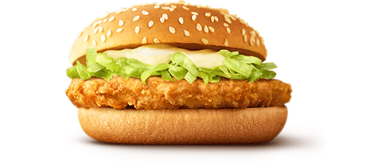

マックチキン
マクドナルドの定番メニューとして、多くのファストフード愛好家から愛されている「マックチキン（チキンクリスプ）」は、お手軽に楽しめる魅力的な商品です。 税込180円という財布に優しい価格で提供されているこのアイテムは、コストパフォーマンスに優れた選択肢として注目されています。 マックチキンの主役は、外はカリッとして中はジューシーなチキンのパティです。 特製のパン粉でコーティングされたチキンは、一口かじるごとに広がる肉の旨みと適度なスパイスの風味が特徴。 マイルドでクリーミーなマヨネーズがさらに味わいを引き立て、パンとの組み合わせも絶妙です。シンプルで飽きのこない味わいは、老若男女問わずに好評を博しています。 また、サイドメニューやドリンクとのセットもお得に楽しめますが、単品で気軽に食べられるのもマックチキンの魅力の一つ。 昼食やちょっとした空腹時のスナックとして、または複数購入してパーティーメニューの一部としても活躍します。バリュー感溢れるマックチキン（チキンクリスプ）は、日常の小さなご褒美にぴったりなアイテムと言えるでしょう。